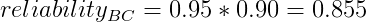

Exercises¶
Here are example projects for you to try, now that you have run the previous examples.
Code the Monte Carlo method for approximating
 mentioned in the Introduction. How many simulated dart throws do you need to run to approximate to 3 digits of accuracy?
mentioned in the Introduction. How many simulated dart throws do you need to run to approximate to 3 digits of accuracy?Let’s examine a twist on the example of drawing all four suits out of 5 drawn cards. Write a program to shuffle a deck of cards and determine on average, how many cards you will need to draw:
- before you have all four suits represented
- before you get all four aces
- before you get a marriage (a King and Queen of the same suit)
- before you get all 13 clubs
- bwfore your get a pinochle (Quen of Spades and Jack of Diamonds)
Given a system made of discrete components with known reliability, what is the reliability of the overall system? For example, suppose we have a system that can be described with the following high-level diagram:

When given an input to the system, that input flows through component A or through components B and C, each of which has a certain reliability of correctness. Probability theory tells us the following:


And the overall reliability of the system is:
![reliability_{sys} = 1.0 - [(1.0 - 0.85) * (1.0 - 0.855)]
= 0.97825](../_images/math/a76dca8ed4b5e47afd45668e6d4ea77efff4dd03.png)
Create a simulation of this system where half the time the input travels through component A. To simulate its reliability, generate a number between 0 and 1. If the number is 0.85 or below, component A succeeded, and the system works. The other half of the time, the input would travel on the lower half of the diagram. To simulate this, you will generate two numbers betwee 0 and 1. If the number for component B is less than 0.95 and the number for component C is less than 0.90, then the system also succeeds. Run many trials to see if you converge on the same reliability as predicted by probability theory.